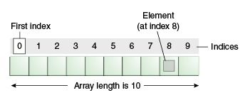

<!DOCTYPE html>
<html lang="en">
<head>
    <meta charset="UTF-8">
    <meta http-equiv="X-UA-Compatible" content="IE=edge">
    <meta name="viewport" content="width=device-width, initial-scale=1.0">
    <title>GROUP-6 | Arrays and Taking Input</title>
    <link rel="stylesheet" href="/css/style.css">
    <script src="https://s3-us-west-2.amazonaws.com/s.cdpn.io/316871/termynal.min.js"></script>
    <script src="main.js"></script>
    

</head>
<body>
    
</body>
</html>

<!-- TAB CONTROLLERS -->
<input id="panel-1-ctrl"
       class="panel-radios" type="radio" name="tab-radios" checked>
<input id="panel-2-ctrl"
       class="panel-radios" type="radio" name="tab-radios">
<input id="panel-3-ctrl"
       class="panel-radios" type="radio" name="tab-radios">
<input id="panel-4-ctrl"
       class="panel-radios" type="radio" name="tab-radios">
<input id="panel-5-ctrl"
       class="panel-radios" type="radio" name="tab-radios">
<!-- <input id="nav-ctrl"
       class="panel-radios" type="checkbox" name="nav-checkbox"> -->

<header id="introduction">
  <h1>ARRAYS AND TAKING INPUT</h1>
  <h4>Group 6</h4>
</header>

<!-- TABS LIST -->
<ul id="tabs-list">
    <!-- MENU TOGGLE -->
    <label id="open-nav-label" for="nav-ctrl"></label>
    <li id="li-for-panel-1">
      <label class="panel-label"
             for="panel-1-ctrl">INTRODUCTION</label>
    </li><!--INLINE-BLOCK FIX
 --><li id="li-for-panel-2">
      <label class="panel-label"
             for="panel-2-ctrl">1-D ARRAY</label>
    </li><!--INLINE-BLOCK FIX
 --><li id="li-for-panel-3">
      <label class="panel-label"
             for="panel-3-ctrl">2-D ARRAY</label>
    </li><!--INLINE-BLOCK FIX
 --><li id="li-for-panel-4">
      <label class="panel-label"
             for="panel-4-ctrl">COMMAND LINE INPUT</label>
    </li><!--INLINE-BLOCK FIX
 --><li id="li-for-panel-5" class="last">
      <label class="panel-label"
             for="panel-5-ctrl">SCANNER CLASS INPUT</label>
    </li>
    <label id="close-nav-label" for="nav-ctrl">Close</label>
</ul>

<!-- THE PANELS -->
<article id="panels">
  <div class="container">
    <section id="panel-1">
      <main>
        <!-- <h1>Radio Toggles</h1> -->
        <!-- <p>In this demo, <code>labels</code> for hidden <code>radios</code> toggle the content. This is based on the behavior in which clicked <code>labels</code> for a <code>radio</code> or <code>checkbox</code> input will check that <code>input</code>.</p>  -->

        <p><b>Java Array</b> is an object which contains elements of a similar data type. Additionally, The elements of an array are stored in a contiguous memory location. It is a data structure where we store similar elements. We can store only a fixed set of elements in a Java array.
        </p>
        
        <p>How many elements can an array hold ?</p>

<!-- <pre>&lt;input id="radio-1" type="radio" name="demo-radios"&gt;
&lt;input id="radio-2" type="radio" name="demo-radios"&gt;</pre> -->
        <!-- #radio-1: <input id="radio-1" type="radio" name="demo-radios"> #radio-2: <input id="radio-2" type="radio" name="demo-radios"> -->
<pre>// declare an array
  double[] data; </pre>
  <pre>// allocate memory
    data = new double[10];</pre>

    <p>How to Initialize Arrays in Java?</p>
      <pre>//declare and initialize and array
        int[] age = {12, 4, 5, 2, 5};</pre>


        <!-- <label for="radio-1" class="demo-label">Toggle #radio-1</label>
        <label for="radio-2" class="demo-label">Toggle #radio-2</label>
        <p>Click one of the labels above and see its effect on the radios above it.</p>
        <p>The radios for this pen's tabs are displayed semi-transparently at the top of this demo page.</p> -->
          <hr>
        <h3>Taking Input from An User In Java</h3>
        <hr>
        <p>
          Java brings various Streams with its I/O package that helps the user to perform all the input-output operations. These streams support all the types of objects, data-types, characters, files, etc to fully execute the I/O operations. There are two ways by which we can take input from the user or from a file.
        </p>
        <ol>
          <li>Through Command-Line</li>
          <li>Through Scanner-Class</li>
        </ol>

      </main>
    </section>
    <section id="panel-2">
      <main>
        <!-- <h1>Input :checked</h1> -->
        <p>Before using the array, we must <b>declare</b> it. Like normal variables, we must provide data type of array and name of an array. Data type means which type of elements we want to store in Array. So, we must specify the data type of array according to our needs. We also need to specify the name of an array so that we can use it later by name. </p>
<pre>
datatype[] arrayName;
<strong>or</strong>
datatype arrayName[];
<strong>or</strong>
datatype []arrayName;
      </pre>
      <br>
      <p>
      <ul>
        <li><b>datatype</b> can be a <b>Primitive data type</b> (int, char, Double, byte etc.) or <b>Non-Primitive data type</b> (Objects).</li>
        <br>
        <li> <b>arrayName</b> is the name of an array</li>
        <br>
        <li><b>[]</b> is called subscript.</li>
        <br>
      </ul>
      </p>
<pre>
int[] number;
<strong>or</strong>
int number[];
<strong>or</strong>
int []number;  </pre>
        
        <hr>
        <h3>One Dimensional Array in Java</h3>
        <hr>
        <p>
          <b>One Dimensional Array in Java</b> is always used with only one subscript([]). A one-dimensional array behaves likes a list of variables. You can access the variables of an array by using an index in square brackets preceded by the name of that array. Index value should be an integer.
        </p>

        <p> Let’s take a simple example program where we will create one dimensional array of five elements and read its elements by using for loop and display them one by one:
        </p>
<pre>
  public class OneDArr {
    public static void main(String[] args) {
      // Declare and initialize an array of five integer values.
      int arr[] = {2,4,6,8,10};
  
      // Display all five elements on the console.  
      for (int i = 0; i < arr.length; i++)
        System.out.println(arr[i] + " ");
    }
  }          
</pre>
<pre>
 <strong>Output:</strong>
  2 4 6 8 10
</pre>
<br>
<p> Another example where we write a program to find the Length of an Array:
</p>
<pre>
  public class OneDArr {
    public static void main(String[] args) 
    {
    // Declare and initialize an array of five integer values.
         int[ ] num = {2, 4, 6, 8, 10, 12, 14};
      
    // Display the length of array.
         System.out.println("Length of array: " +num.length);
     }
    }        
</pre>
<pre>
<strong>Output:</strong>
  Length of array: 7
</pre>
    
        
      </main>
    </section>
    <section id="panel-3">
      <main>
        <p>Like the one–dimension array, in two dimensional we provide data type of array and name of array for the declaration. Data type means which type of elements we want to store in Array. In two-dimensional array we are using two subscripts for declaration of array. First subscript used for ROW and second for COLUMN. </p>
<pre>
datatype[][] arrayName;
<strong>or</strong>
datatype arrayName[][];
<strong>or</strong>
datatype [][]arrayName;
      </pre>
      <br>
      <p>
      <ul>
        <li>Two subscripts <b>[][]</b> is used to defined as a two-dimensional array.</li>
        <br>
        <li> <b>arrayName</b> is the name of an array</li>
        <br>
        <li>Here <b>int</b> is <b>datatype</b> and <b>number</b> is the name of the two-dimensional array.</li>
        <br>
      </ul>
      </p>
<pre>
int[][] number;
<strong>or</strong>
int number[][];
<strong>or</strong>
int [][]number;  </pre>
        
        <hr>
        <h3>Two Dimensional Array in Java</h3>
        <hr>
        <p>
          <b>Two Dimensional Array in Java</b> is the simplest form of a multidimensional array. A two-dimensional array is the array of arrays because they store in tabular form. As like single dimensional array we must declare the two-dimensional array variable. We must specify the array name followed by two square brackets called <b>subscript([][])</b>. 
        </p>

        <p> Let us create a program where we will create a 2D array and display its elements in the matrix form. To display elements of a two-dimensional array, we will use nested for loop. The outer for loop represents rows and the inner one represents columns of each loop:
        </p>
<pre>
  public class TwoDArrayExample {
    public static void main(String[] args) 
    {
    // Create a 2D array of int type.
         int[ ][ ] x = {{1, 2, 3},
               {4, 5, 6},
               {7, 8, 9}
               };
    // Read and display array elements in a matrix form.
         System.out.println("Displaying elements of 2D array in a matrix form:");
    // Applying nested for loop.
        for(int i = 0; i < 3; i++) // Outer for loop for Rows
        {
       for(int j = 0; j < 3; j++) // Columns in each row.
       {
        System.out.print(x[i][j]+ "\t"); 
       }
        System.out.println(); // next line.	 
       }
      }
    }        
</pre>
<pre>
 <strong>Output:</strong>
          Displaying elements of 2D array in a matrix form:
          1	2	3	
          4	5	6	
          7	8	9	
</pre>
<br>
<p> Another example program where we will calculate the total marks obtained in three subjects by three students and display their percentages.
</p>
<pre>
  public class StudentMarks {
    public static void main(String[] args) 
    {
      String[ ] str = {"Deep", "Amit","Larry"}; // One dimensional array.	
      int[ ][ ] marks = new int[3][5]; // Two dimensional array.
    
    // Allocating memory for marks obtained in three subjects by student Deep.
        marks[0][0] = 80;
        marks[0][1] = 97;
        marks[0][2] = 80;
    // Allocating memory for marks obtained in three subjects by student Amit.
        marks[1][0] = 99;
        marks[1][1] = 98;
        marks[1][2] = 100;
    // Allocating memory for marks obtained in three subjects by student Larry.   
        marks[2][0] = 87;
        marks[2][1] = 99;
        marks[2][2] = 93;
       
    for(int i = 0; i < marks.length; i++)
    {
    int total = 0;	
     for(int j = 0; j < marks.length; j++)
     {
        total = total + marks[i][j]; 
     }
     for(int k = 0; k < str.length; k++)
     {
       System.out.println("Total marks obtained by student " +str[k]+": " +total);
       double perc = (double)total/3;
       System.out.println("Percentage: " +perc);
     }
    }}
    }        
</pre>
<pre>
<strong>Output:</strong>
         Total marks obtained by student Deep: 279
         Percentage: 93.0
         Total marks obtained by student Amit: 279
         Percentage: 93.0
         Total marks obtained by student Larry: 279
         Percentage: 93.0
</pre>
      </main>
    </section>
    <section id="panel-4">
      <main>
        <!-- <h1>Menu</h1> -->
        <p>When a user enters the inputs on the console using commands, we sending the input as an argument to the main method in java that’s why in <code>public static void main()</code> we creating a string array to store values which work at executing time.
        </p>
        <p>
          Most used user input for competitive coding. The command-line arguments are stored in the String format. The parseInt method of the Integer class converts string argument into Integer. Similarly, for float and others during execution. The usage of args[] comes into existence in this input form. The passing of information takes place during the program run. The command line is given to args[]. These programs have to be run on cmd.
        </p>
        <p>After all that a new JDK was updated further by a scanner function was implemented in order to solve the problems much more confidently.
          The main difference here it has when passing the command line inputs as arguments. The inputs were directly written with the execution file command.
          Thereby the function-calls the value directly from the main method ( string args[]).</p>
        <p>
          Example Code # 1 ( Without command line arguments ):-
        </p>
<pre>
  {
    public static void main(String args[]) {
  
      System.out.println("hello world");
  
    }
  }         
</pre>
<p>
Output
</p>


<!-- <div id="termynal" data-termynal data-termynal data-ty-typeDelay="40" data-ty-lineDelay="700">
  <span data-ty="input">pip install spacy</span>
  <span data-ty="progress"></span>
  <span data-ty>Successfully installed spacy</span>
  <span data-ty></span>
  <span data-ty="input">python -m spacy download en</span>
  <span data-ty="progress"></span>
  <span data-ty>Installed model 'en'</span>
  <span data-ty></span>
  <span data-ty="input">python</span>
  <span data-ty="input" data-ty-prompt=">>>">import spacy</span>
  <span data-ty="input" data-ty-prompt=">>>">nlp = spacy.load('en')</span>
  <span data-ty="input" data-ty-prompt=">>>">doc = nlp(u'Hello world')</span>
  <span data-ty="input" data-ty-prompt=">>>">print([(w.text, w.pos_) for w in doc])</span>
  <span data-ty>[('Hello', 'INTJ'), ('world', 'NOUN')]</span>
</div> -->
<br>
<p>
  Example code # 2 ( With command line arguments ):-
</p>
<pre>
  class A
  {
    public static void main(String args[])
    {
   
     System.out.println(args[0]);
     System.out.println(args[1]);
   
   
    }
  }      
</pre>
<p>
Output
</p>

<br>
<h3>Program to check for command line arguments</h3>

<pre>
class Hello {
	public static void main(String[] args)
	{
		// check if length of args array is
		// greater than 0
		if (args.length > 0) {
			System.out.println(
				"The command line arguments are:");

			// iterating the args array and printing
			// the command line arguments
			for (String val : args)
				System.out.println(val);
		}
		else
			System.out.println("No command line " + "arguments found.");
	}
}
</pre>
<pre>
  <strong>Command Line Arguments: </strong>
  javac GFG1.java
  java Main Hello World
  <br>
  <strong>Output: </strong>
  The command line arguments are:
  Hello
  World

</pre>
      </main>
    </section>
    <section id="panel-5">
      <main>
        <p>
          We need to import the <code>java.util.Scanner</code> package before we can use the <code>Scanner</code> class.
        </p> 
        <br>
        <hr>
        <h3>Creating a Scanner Object in Java</h3>
        <hr>
        <p>
          Once we import the package, here is how we can create <code>Scanner</code> objects.
        </p>
     <pre>
      // read input from the input stream
      Scanner sc1 = new Scanner(InputStream input);
      
      // read input from files
      Scanner sc2 = new Scanner(File file);
      
      // read input from a string
      Scanner sc3 = new Scanner(String str);
     </pre>
     <br>
     <hr>
      <h3>Java Scanner Methods to Take Input</h3>
<hr>
<p>
  The <code>Scanner</code> class provides various methods that allow us to read inputs of different types.
</p>
<table>
    <tr>
      <th>Method</th>
      <th>Description</th>
    </tr>
    <td>
      <code>nextInt()</code>
    </td>
    <td>
      reads an <code>int</code> value from the user
    </td>
    <tr>
      <td>
        <code>nextFloat()</code>
      </td>
      <td>
        reads a <code>float</code> value from the user
      </td>
    </tr>
    <tr>
      <td>
        <code>nextBoolean()</code>
      </td>
      <td>
        reads a <code>boolean</code> value from the user
      </td>
    </tr>
    <tr>
      <td>
        <code>nextLine()</code>
      </td>
      <td>
        reads a line of text from the user
      </td>
</tr>
<tr>
      <td>
        <code>next()</code>
      </td>
      <td>
        reads a word from the user
      </td>
</tr>
<tr>
      <td>
        <code>nextDouble()</code>
      </td>
      <td>
        reads a <code>double</code> value from the user
      </td>
</tr>
<tr>
      <td>
        <code>nextByte()</code>
      </td>
      <td>
        reads a <code>byte</code> value from the user
      </td>
</tr>
<tr>
      <td>
        <code>nextShort()</code>
      </td>
      <td>
        reads a <code>short</code> value from the user
      </td>
</tr>
<tr>
      <td>
        <code>nextLong()</code>
      </td>
      <td>
        reads a <code>long</code> value from the user
      </td>
</tr>


  </th>
</table>
<br>
<hr>
<h3>Working of Java Scanner</h3>
<hr>
<p>
  The Scanner class reads an entire line and divides the line into tokens. Tokens are small elements that have some meaning to the Java compiler. For example,
</p>
<p>
  Suppose there is an input string:
</p>
<pre>We are Group-6.</pre>
<p>
  In this case, the scanner object will read the entire line and divides the string into tokens: "We", "are" and "Group-6". The object then iterates over each token and reads each token using its different methods.
</p>
<br>
<p>
 Let's take a example to read a line of text using <code>Scanner</code> Class:
</p>

<pre>
import java.util.Scanner;

class Main {
  public static void main(String[] args) {

    // creates an object of Scanner
    Scanner input = new Scanner(System.in);

    System.out.print("Enter your name: ");

    // takes input from the keyboard
    String name = input.nextLine();

    // prints the name
    System.out.println("My name is " + name);

    // closes the scanner
    input.close();
  }
</pre>
      </main>
    </section>
  </div>
</article>